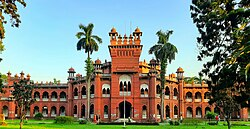
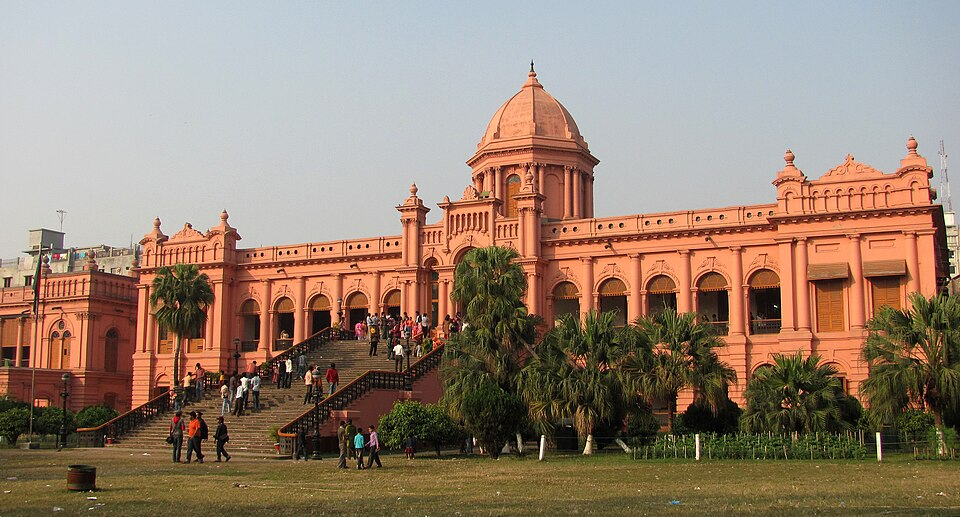

Dhaka is the heart of Bangladesh. Knows as the city with a rich Mughal history and a vibrant modrent culture


|  | ||
|---|---|---|
Dhaka is the heart of Bangladesh. Knows as the city with a rich Mughal history and a vibrant modrent culture |
||
| About Dhaka | Image | Brief Description |
| Historical Place | |
Lalbag Front: A 17th central Mughl frootress. It indicate the tomp of pari bibi and a beautifull mosque |
| Famous Food | |
Kacchi Biryani: Kacchi biryani is a flavorful dish made by slow-cooking raw, |
| Visiting Place |  | Ahsan Monjil: Ahsan Manzil is a historic pink palace. |